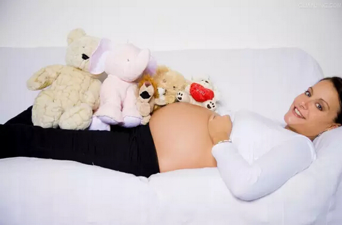

孕妈的这几大生产观念，决定了分娩是否顺利！
90%准妈妈错误认为:前一胎剖腹,下一胎也要剖腹。
如果第一胎开刀的原因是因胎位不正,羊水太浓稠、胎儿心跳不佳或个人因素,那第二胎自然产的成功几率可达80～90%。但是第一胎选择剖腹产若是因为骨盆太小、产程迟滞,那第二胎自然产将有高达60～70%的失败率。
有时候,第二胎采取剖腹产,是怕会造成子宫破裂。因此,第二胎的生产方式需视准妈妈的具体状况而定。
医生提醒:上一胎剖腹、第二胎要自然产,最好选择能进行30分钟紧急剖腹产的医院。
康
40%准妈妈错误认为:胎儿愈大表示愈健康。
体重太重、胎儿太大都会增加生产风险及困难,提高延长产程、胎儿缺氧、吸入胎便、手臂或锁骨骨折受伤的危险,有时候还必须借助真空吸引,易造成胎儿受伤,母体骨盆、会阴受伤的机会也会升高。因此,胎儿不是愈大愈好,生产顺利最重要。
医生提醒:①在肚子里的宝宝不用拼大小,在健康范围就好。②如果有良好的无痛分娩的服务应该好好利用,不需要投鼠忌器。

25%准妈妈错误认为:大小孩会难生,小小孩一定好生。
有些准妈妈认为3200克就一定生得出来,3800就不容易生出来。其实,胎儿的大小跟生不生得出来没有绝对的关系,大的胎儿还是可生得出来,也常有临床遇到小的胎儿却生不出。
胎儿不好娩出的原因很多,会影响生不生得出来的因素,包括骨盆大小、子宫收缩力量、胎儿太小、对痛的忍耐度、出力的好坏等,胎儿的大小只是其中的一项因素。
医生提醒:胎儿大小不是决定顺产与否的唯一原因。
25%准妈妈错误认为:屁股大的女人生产比较顺利。
一直以来,都有言论说“屁股大的女人好生养”。一般人们认为,屁股大就是骨盆比较大,所以好生。事实上,好不好生要看骨盆内的宽度及斜度,骨盆的出口要比较宽,这些从外观上都看不出来。
屁股比较大或下半身比较大的人,有些并不是骨盆大,反而只是因身体的脂肪比较多,因此更容易造成高比例的妊娠高血压、难产、胎儿体重过重等原因。所以,并不是屁股或下半身大的人就一定好生、会顺产。
医生提醒:屁股大的女人也许只是脂肪比较多。
40%准妈妈错误认为:高龄产妇必须剖腹生产。
高龄产妇也不一定得剖腹生产。只要骨盆大小、子宫收缩的强度都正常,有很多高龄产妇一样自然产。有时候因为年纪的关系,骨盆韧带肌肉柔软度不够,会造成产程比较久。
但是这样的状况也不一定会需要剖腹产,最重要的是准妈妈必须多运动,不要将胎儿养得太大,加上其它条件的配合,一样可以自然生产。
医生提醒:高龄产妇只要身体等各方面状况许可,当然还是自然生产最好。
50%准妈妈错误认为:催生不好,时间到了,自然会想生。
过期妊娠的子宫环境不好、羊水不足且胎盘功能也不佳,属不适合胎儿继续生长的环境,对胎儿健康有危害,此时催生是一种必要的措施,也是预防性生产的观念。一般都希望等时间到了再生出来最好,但这不包括有危险的妊娠。
若足月后胎头有点大,会建议提早生,不要等到3～4千克需要剖腹的时候才施行手术。有些准妈妈在自然产生不出来时,才同意使用手术,却导致胎死腹中、胎儿缺氧。
有些罹患妊娠高血压的准妈妈因胎盘功能不好,胎儿生长迟滞,体重没有增加,就必须引产,等出来后再养,不能放任等待危险发生。
温馨提示：准妈妈们在怀孕期间应多吃水果、素菜以及有营养的食物，每天保持好心情，这样肚子里的胎儿才能健康的成长哦！